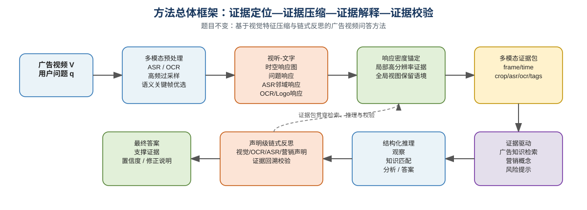
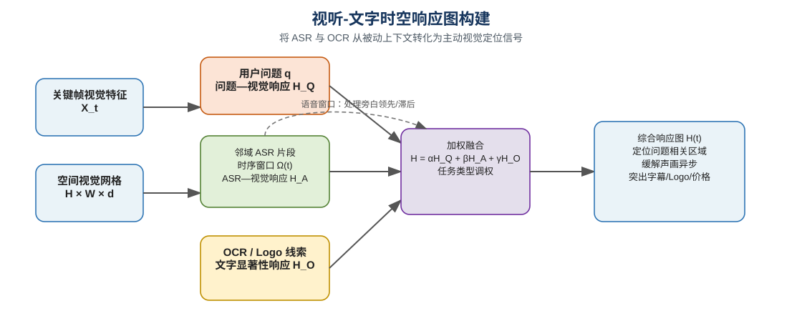
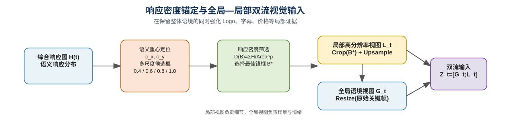
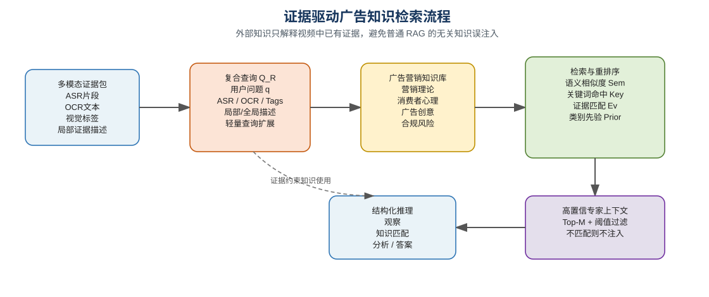
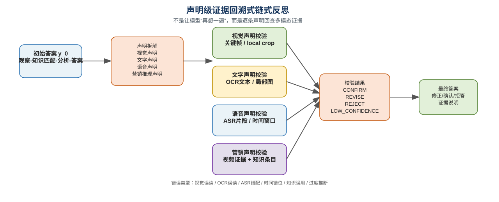

论文题目保持不变：基于视觉特征压缩与链式反思的广告视频问答方法
展示“证据定位—证据压缩—证据解释—证据校验”的全文方法闭环。

展示问题响应、ASR 邻域响应、OCR/Logo 响应如何融合为综合响应图。

展示语义重心、多尺度候选框、响应密度筛选以及 Global-Local 双流输入。

展示证据包如何构造复合查询，并进行证据感知知识重排序。

展示初始答案声明拆解，以及视觉/OCR/ASR/营销声明的逐项证据回溯校验。
